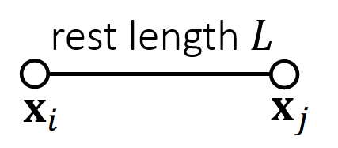
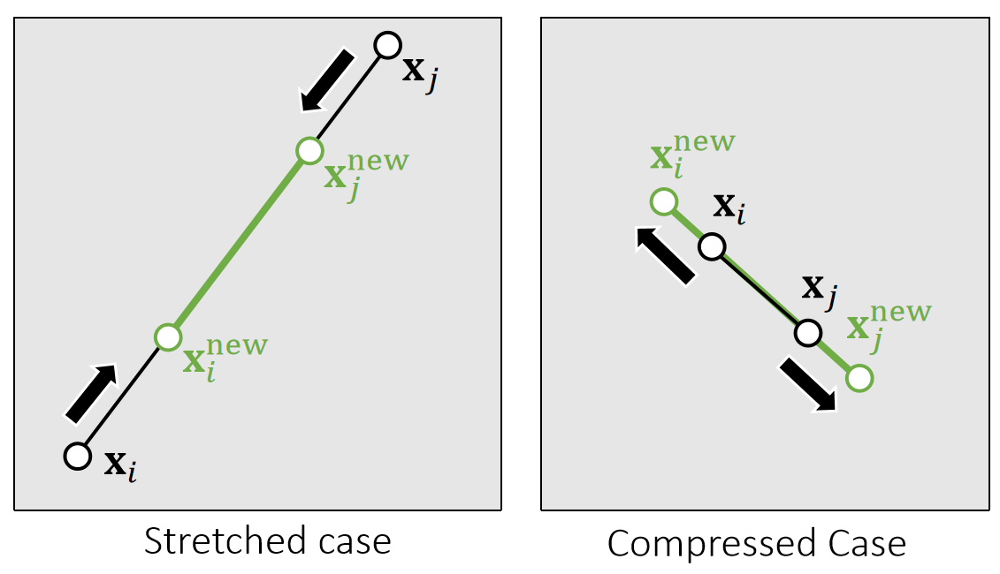
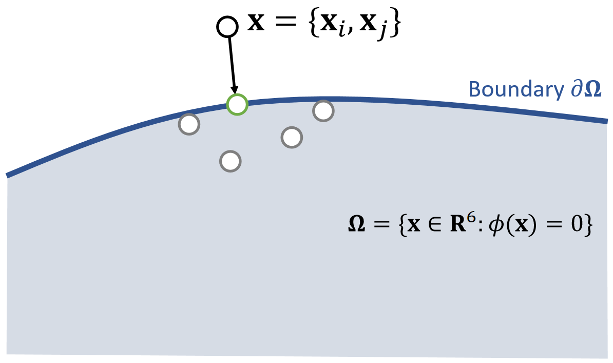
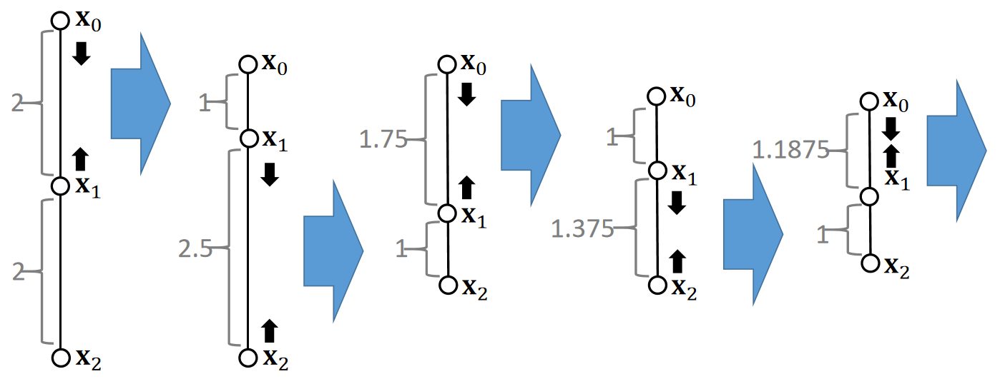
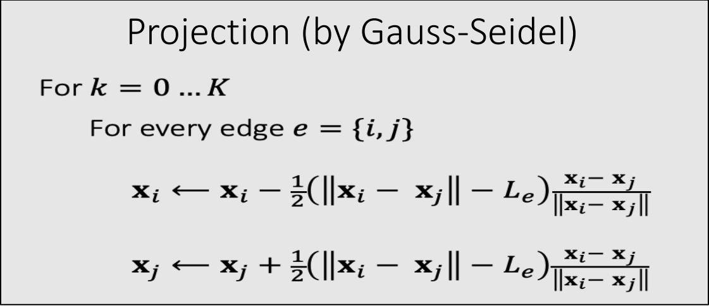
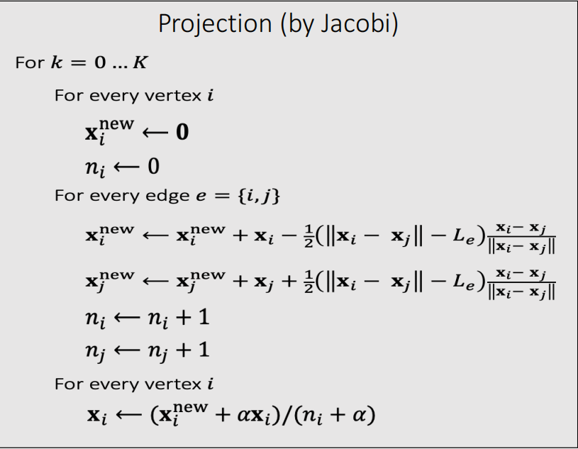

投影函数 Projection Function
P5
A Single Spring
If a spring is infinitely stiff, we can treat the length as a constraint and define a projection function.

\(\mathbf{ϕ} (\mathbf{x} )=||\mathbf{x} _i− \mathbf{x} _j||−L=0\)
✅ projection function.投影函数、会移动端点使弹簧满足约束。

P6

✅ 把\(\mathbf{x}_ i\)和\(\mathbf{x}_ j\)拼成6维空间中的点\(\mathbf{x}\)，满足约束的\(\mathbf{x}\)构成6D空间中的一块区域；
{\(\mathbf{x} _i^{\mathbf{new}},\mathbf{x} _j^{\mathbf{new} }\)}= argmin \( \frac{1}{2}\){\(m_i||\mathbf{x} _i^{\mathbf{new} }−\mathbf{x} _i||^2+m_j||\mathbf{x} _j^{\mathbf{new}} −\mathbf{x} _j||^2\)}
such that \(\mathbf{ϕ} (\mathbf{x} )=0\)
✅ 投影函数的目标：(1)把\(\mathbf{x}\)移到区域内。 (2)移动距离最短，因此构成优化问题。
✅优化问题，但不是通过选代解决，而是数值求解，直接算出最优的\(\mathbf{x}_i\)和\(\mathbf{x}_j\).
P7
$$ \mathbf{x} ^{\mathbf{new} } \longleftarrow \mathrm{Projection} (\mathbf{x}) $$
$$ \mathbf{x} _i^{\mathbf{new} }\longleftarrow \mathbf{x} _i−\frac{m_j}{m_i+m_j} (||\mathbf{x} _i−\mathbf{x} _j||−L)\frac{\mathbf{x} _i−\mathbf{x}_j}{||\mathbf{x} _i−\mathbf{x} _j||} $$
$$ \mathbf{x} _j^{\mathbf{new} }\longleftarrow \mathbf{x} _j+\frac{m_i}{m_i+m_j} (||\mathbf{x} _i−\mathbf{x} _j||−L)\frac{\mathbf{x} _i−\mathbf{x}_j}{||\mathbf{x} _i−\mathbf{x} _j||} $$
$$ \quad $$
$$ \mathbf{ϕ} (\mathbf{x} ^{\mathbf{new} })=||\mathbf{x} _i^{\mathbf{new} }− \mathbf{x} _j^{\mathrm{new} }||−L=||\mathbf{x} _i−\mathbf{x} _j−\mathbf{x} _i+\mathbf{x} _j+L||−L=0 $$
✅ 对推导结果的合理性解释：(1) 移到前后质心不变。(2) 移到方向为沿着或远离质心。(3) 移到距离与自身重量有关。
By default, \(m_i=m_j\), but we can also set \(m_i=\infty\) for stationary nodes.
✅ 对于固定点，不更新就好了。
P8
Multiple Springs – A Gauss-Seidel Approach
What about multiple springs? The Gauss-Seidel approach projects each spring sequentially in a certain order. Imagine two springs with unit rest lengths…

P9

-
We cannot ensure the satisfaction of every constraint. But the more iterations we use, the better those constraints are satisfied.
-
Although the name is related to Gauss-Seidel, it differs from Gauss-Seidel. It is more relevant to stochastic gradient descent (in machine learning).
-
The order matters. The order can cause bias and affect convergence behavior.
✅顺序影响结果的偏向性和收敛速度。
P10
Multiple Springs – A Jacobi Approach
-
To avoid bias, the Jacobi approach projects all of the edges simultaneously and then linearly blend the results.
-
The problem is an even lower convergence rate.
-
Again, the more iterations it uses, the better the constraints are enforced.

✅ 基于每条边计算\(\mathbf{x}\)的更新但不真的更新、每个点会得到多种更新方案，最后取更新方案的均值。
本文出自CaterpillarStudyGroup，转载请注明出处。
https://caterpillarstudygroup.github.io/GAMES103_mdbook/